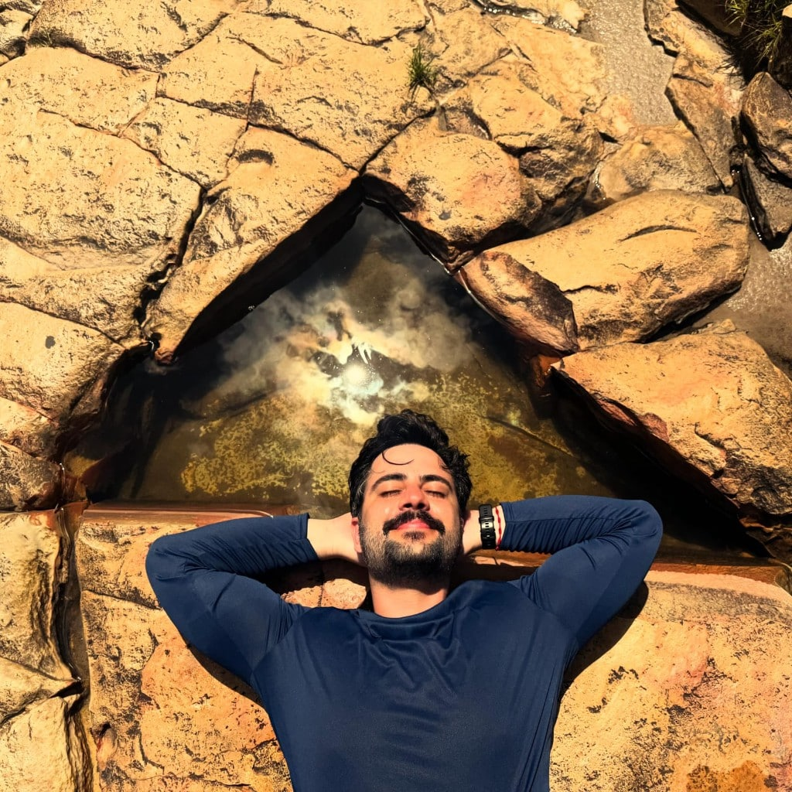
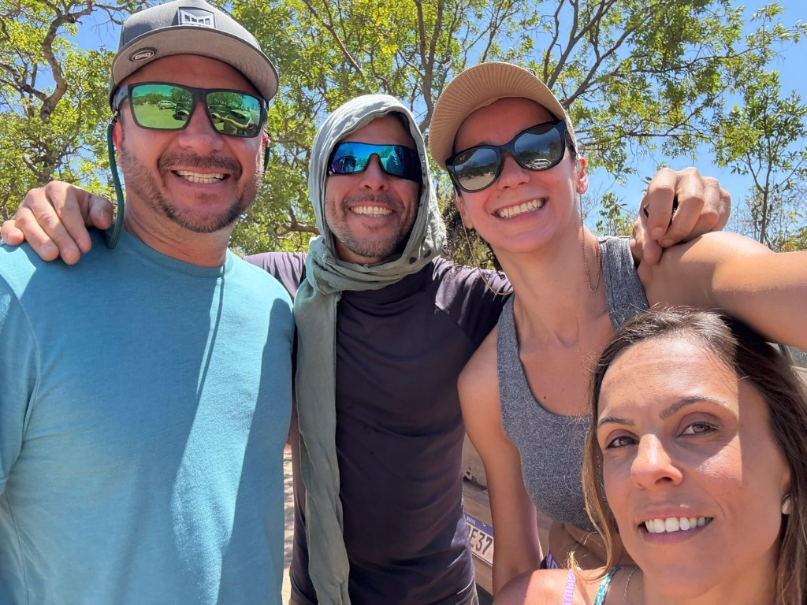
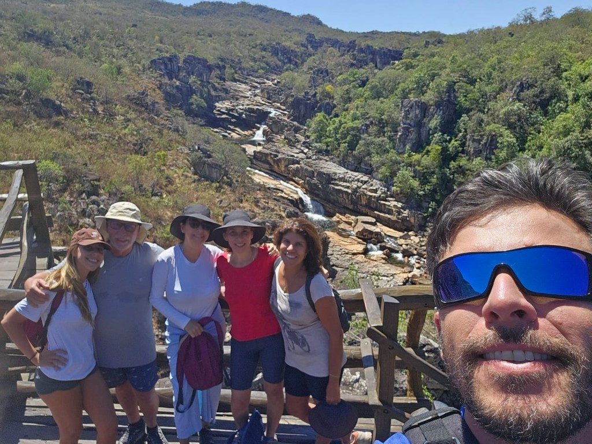
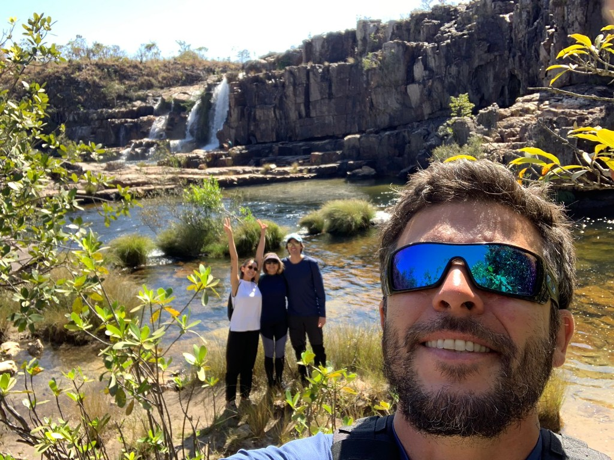
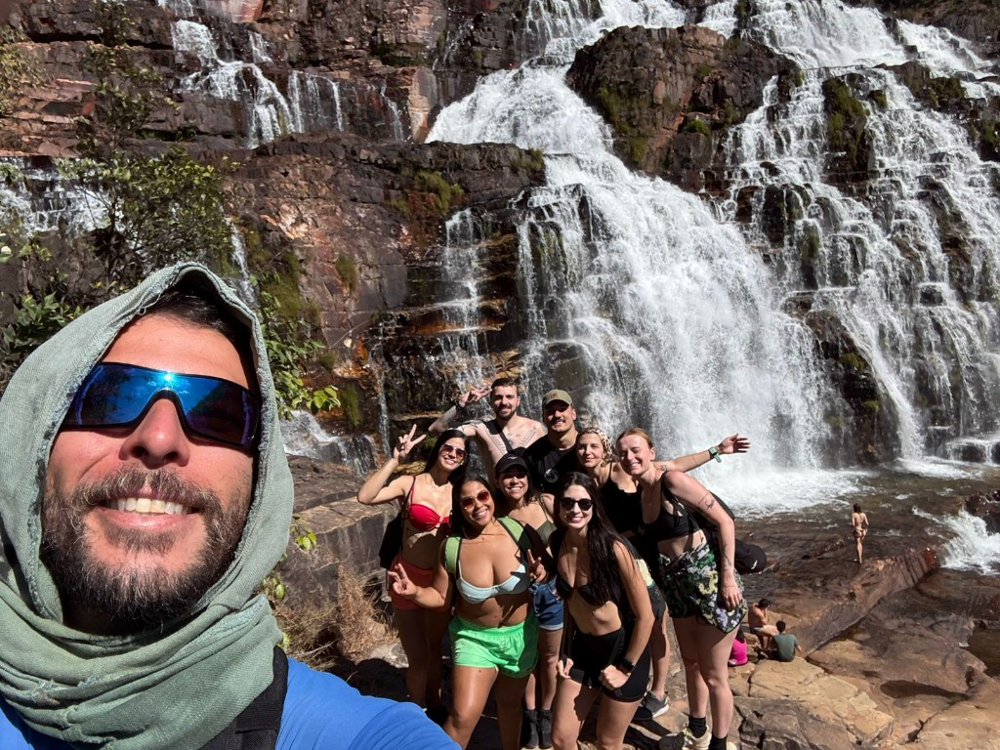
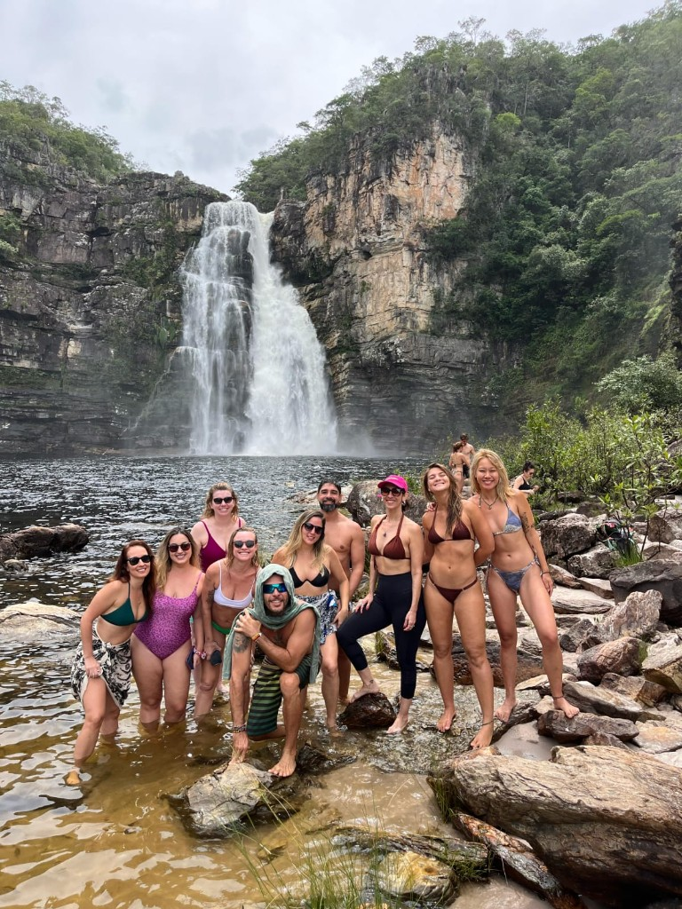
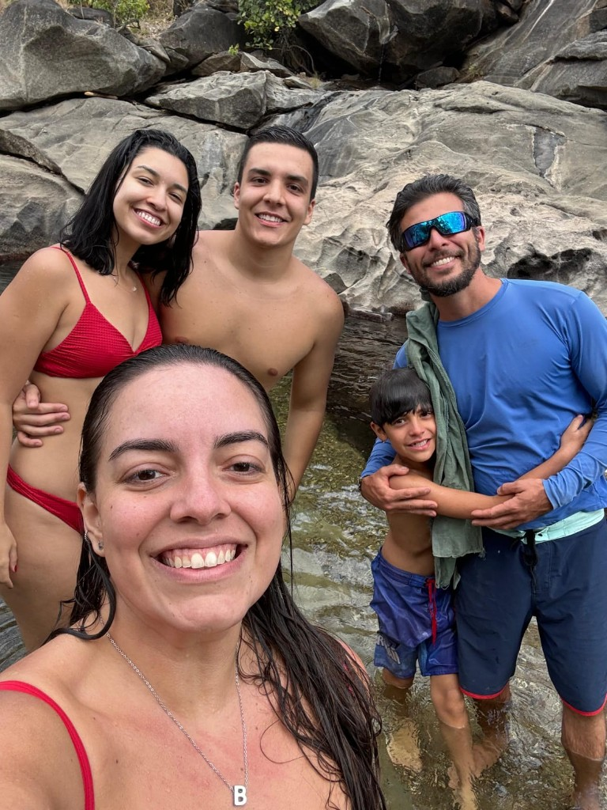
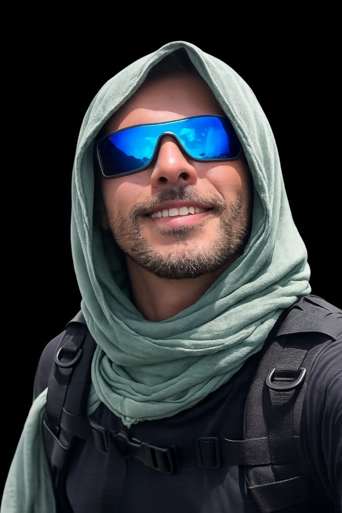

A Chapada dos Veadeiros é um dos destinos de ecoturismo mais extraordinários do Brasil. Cachoeiras de águas cristalinas, trilhas no cerrado nativo, poços de cor esmeralda e formações rochosas com mais de um bilhão de anos. É também um ambiente selvagem, que exige respeito, preparo e, acima de tudo, conhecimento local.
É aqui que entra o papel insubstituível do guia de turismo credenciado. Mais do que apontar o caminho, o condutor transforma cada passeio numa experiência completa: segura, emocionante, bem registrada em fotos e repleta de descobertas que você jamais faria sozinho.
Segurança: o benefício mais importante
A Chapada dos Veadeiros é linda, e exatamente por isso não deve ser subestimada. Trilhas sem sinalização, rios com variação de correnteza, animais peçonhentos como serpentes, aranhas e escorpiões, e o risco real de cabeça d'água (cheia repentina nos rios) são realidades que quem não conhece a região tende a ignorar.
Os condutores de ecoturismo passam por um curso de 160 horas que inclui técnicas de primeiros socorros, resgate aquático e estágio presencial em cada atrativo. São treinados anualmente pelo Corpo de Bombeiros e atuam como salvavidas, com atenção redobrada quando há crianças, idosos ou iniciantes no grupo.
- Se perder nas trilhas: muitas sem sinalização adequada, especialmente fora do parque nacional
- Encontro perigoso com animais: jararaca, cascavel, escorpiões, aranhas são comuns no cerrado, porém o mais perigoso é a onça
- Acidentes em corredeiras e quedas: pedras lisas e correnteza traiçoeira sem o conhecimento do terreno
- Cabeça d'água: enchentes repentinas, especialmente no período de chuvas
- Emergência sem suporte: sem sinal de celular, sem kit de primeiros socorros e sem saber o que fazer
- Risco ampliado para crianças e idosos: sem apoio especializado em terreno irregular e percursos longos
- Correntezas ocultas e armadilhas invisíveis: alguns dos pontos mais bonitos da Chapada escondem correntes subaquâneas traiçoeiras que não se percebem olhando para a superfície.
Em maio de 2026, uma criança foi atacada por uma onça-parda na região da Chapada ao voltar de uma cachoeira com a família — o animal estava em uma árvore e a vítima ficou ferida no rosto. O caso foi registrado pela imprensa; veja a reportagem completa no Metrópoles.
O perigo real de encontrar uma onça na trilha
Uma criança de 8 anos foi atacada por uma onça-parda na Chapada dos Veadeiros em maio de 2026, enquanto voltava de uma cachoeira com a família. O animal, que estava numa árvore, saltou sobre ela e a feriu no rosto — ela precisará de cirurgia plástica. O caso é raro, mas serve de alerta: ao encontrar uma onça, nunca corra nem dê as costas, mantenha contato visual, pareça maior levantando os braços, faça barulho e segure crianças no colo. Evite trilhas isoladas no amanhecer e entardecer. O respeito ao habitat natural é essencial.
Fotos que viram memórias para a vida toda
Cada atrativo da Chapada tem ângulos privilegiados que só quem conhece o local de cor sabe encontrar. O guia leva o grupo exatamente até esses pontos, e ainda registra os momentos com o olhar de quem já fotografou centenas de grupos naquele mesmo cenário.
Sem guia, você fotografa o que enxerga. Com guia, você fotografa o que a Chapada realmente tem para mostrar. As fotos que você vai guardar para sempre são as que o guia torna possíveis.

Aproveitamento de 100%: nenhum atrativo desperdiçado
Cada atrativo esconde lugares que não aparecem em nenhum mapa turístico comum: piscinas naturais escondidas, trilhas secundárias com pontos de vista inacreditáveis, horários certos para evitar multidões. O guia conhece todos esses segredos porque os vivencia diariamente.
Grupos sem guia visitam em média apenas 40% dos pontos mais bonitos de cada atrativo. Com um condutor experiente, o aproveitamento chega a 100%, incluindo mirantes secretos, poços de banho e atalhos que a maioria dos turistas nunca descobre.

Atenção especial para famílias, crianças e idosos
Trilhar com crianças pequenas ou com pessoas da terceira idade exige planejamento diferente: ritmo adaptado, paradas estratégicas, atenção constante ao nível de esforço e, principalmente, um olho sempre atento perto da água.
O guia adapta o roteiro para cada perfil de grupo. Para famílias com crianças, priorizamos trilhas mais curtas com recompensas incríveis ao final. Para grupos de terceira idade, escolhemos percursos com sombra, boa estrutura e paradas confortáveis. Ninguém fica para trás.




Novas amizades e experiências compartilhadas
Passeios em grupos compartilhados são uma das experiências mais ricas que a Chapada pode oferecer. Você chega como desconhecido e volta para casa com novos amigos, pessoas de diferentes cidades, histórias e perspectivas que se unem pela mesma paixão pela natureza.
O guia é também o facilitador dessas conexões. Conhece cada membro do grupo pelo nome, cria um ambiente de confiança e transforma estranhos em companheiros de aventura. Muitas das amizades feitas nas trilhas duram para a vida toda.
Conhecimento local: história, biodiversidade e cultura
A formação do condutor de ecoturismo vai muito além do percurso físico. O guia conhece a história da região, a biodiversidade do cerrado, as lendas locais, inclusive aquelas sobre OVNIs avistados na Chapada, e as características geológicas únicas das rochas com mais de um bilhão de anos.
Cada parada se transforma numa aula viva. Você aprende a identificar plantas medicinais do cerrado, entende por que a água das cachoeiras tem essa cor única e descobre por que a NASA considera esta região o lugar mais iluminado do mundo.
O lado humano que faz toda a diferença
Conduzir grupos pela Chapada dos Veadeiros não é apenas um trabalho. É uma vocação. Cada passeio carrega uma história. Cada turista chega com uma expectativa e o guia tem o compromisso de superá-la.

Em um dia especial, Diego levou o filho para conhecer o trabalho do pai. Os turistas adoraram. Essa espontaneidade, essa humanidade, é exatamente o que diferencia um guia local credenciado de qualquer aplicativo de navegação ou roteiro impresso.
Resumo: tudo o que você ganha com um guia
Segurança total
Primeiros socorros, resgate aquático e prevenção de acidentes em trilhas.
Fotos incríveis
Ângulos privilegiados e registros que você não conseguiria sozinho.
100% de aproveitamento
Pontos secretos, mirantes exclusivos e nenhum atrativo desperdiçado.
Nunca se perder
Trilhas sem sinalização têm muitos caminhos errados. O guia conhece cada desvio.
Conhecimento vivo
História, geologia, biodiversidade e cultura contadas por quem nasceu aqui.
Foco em família
Ritmo adaptado, rotas seguras e atenção especial para crianças e idosos.
Novas amizades
Grupos compartilhados reúnem pessoas incríveis com a mesma paixão pela natureza.
Eficiência máxima
Sem perda de tempo, sem caminhos errados, sem decepções. Só o melhor.
É obrigatório contratar um guia na Chapada?
Em alguns atrativos, sim. O Parque Nacional da Chapada dos Veadeiros exige guia para trilhas noturnas e para visitantes que chegam após as 13h, horário limite de entrada, a partir do qual há risco real de retorno fora do encerramento do parque. Proprietários de atrativos particulares também costumam exigir a presença de um condutor credenciado para garantir a segurança de seus visitantes.
Nos demais atrativos, mesmo onde não é obrigatório, o guia é essencial. Alguns inclusive oferecem desconto na entrada para grupos acompanhados de guia local. Um fato permanece em qualquer caso: guia é sinônimo de segurança, e segurança não tem preço.
Pronto para viver a Chapada do jeito certo?
Fale agora com a Guia Chapada Veadeiros e planeje seu passeio com segurança, aproveitamento máximo e fotos que você vai guardar para sempre.
💬 Falar no WhatsApp
Brasileiro, pai, nascido no Rio de Janeiro, descendência italiana, analista de sistemas pela PUC-RIO, Diego Navi trocou o escritório pelo cerrado e fundou a Guia Chapada Veadeiros em 2017. Fluente em inglês e espanhol, conduziu centenas de grupos com segurança pela Chapada dos Veadeiros em todas as épocas do ano e conhece cada cachoeira, cada trilha e cada cantinho deste portal da Terra desde 2009.